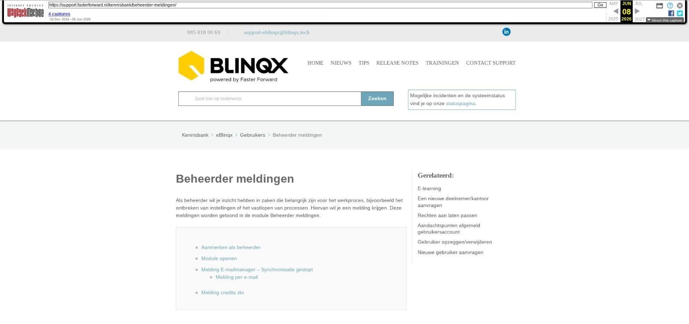

Beheerder meldingen

Tekstinhoud
Beheerder meldingen
Als beheerder wil je inzicht hebben in zaken die belangrijk zijn voor het werkproces, bijvoorbeeld het ontbreken van instellingen of het vastlopen van processen. Hiervan wil je een melding krijgen. Deze meldingen worden getoond in de module Beheerder meldingen.
Aanmerken als beheerder
Module openen
Melding E-mailmanager – Synchronisatie gestopt
Melding per e-mail
Melding credits zkr.
Aanmerken als beheerder
Wij kunnen gebruikers aanmerken als beheerder. Normaliter zijn dit de bij ons bekende mutatiebevoegden. Het is niet mogelijk om dit zelf in te stellen. Wil jij als beheerder aangemerkt worden dan kan je een e-mail sturen naar support-eblinqx@blinqx.tech. Let op: alleen mutatiebevoegden kunnen dit verzoek indienen.
Module openen
Je kunt de module bereiken via Beheer – Systeem – Beheerder meldingen. Ook staat er op het dashboard een knop/snelkoppeling Beheerder meldingen. Deze knop is altijd zichtbaar en is blauw als geen meldingen zijn.
De knop wordt oranje als er een nieuwe melding is toegevoegd. Door de kleurverandering wordt je hierop geattendeerd.
Melding E-mailmanager – Synchronisatie gestopt
Deze melding zal verschijnen als de mailbox op synchronisatie 'Geen (foutmeldingen)' staat en verdwijnt als deze op 'Geen' wordt gezet of weer wordt aangezet door een interval te selecteren. Vanuit de melding kan je op de snelkoppeling klikken om zo bij de betreffende mailbox uit te komen.
Melding per e-mail
Naast de melding in de beheerdersmeldingenmodule kan je ook een e-mail ontvangen die je erop attendeert dat de synchronisatie van een e-mailbox is uitgevallen. Er kan één e-mailadres worden ingesteld die deze e-mail ontvangt. Wil je gebruik maken van deze functionaliteit stuur dan een e-mail naar support-eblinqx@blinqx.tech met daarin het gewenste e-mailadres.
Daarnaast moet je een e-mailbox instellen die de uitgaande attenderende e-mail verstuurt. Dit kan je aangeven in de e-mailmanager bij de betreffende mailbox. Je vinkt dan 'Gebruik voor het versturen van de beheerders e-mail' aan. Maar één e-mailbox kan hiervoor ingesteld worden. Is deze ingesteld dan is het niet meer mogelijk om deze optie aan te vinken bij een andere mailbox.
Melding credits zkr.
Via de koppeling met zkr. kan je klanten verifiëren en controleren. Hiervoor moet je credits afnemen bij zkr. Zijn er geen credits meer of zijn deze verlopen dan wordt hiervan een beheerdersmelding getoond om je hierop te attenderen. Neem contact op met zkr. om dit verder in orde te maken. De melding kan je verwijderen door middel van het rode kruisje.
Laatste update: 15 oktober 2025
Was deze informatie nuttig?
Ja Nee